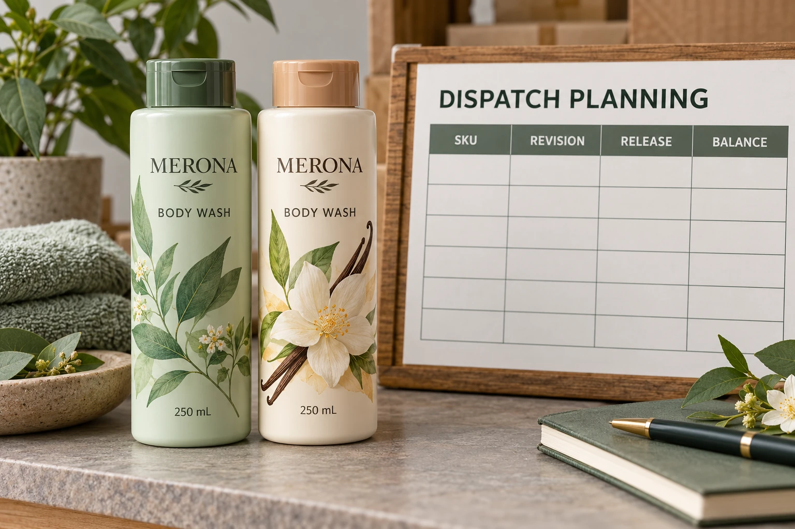

Decide whether a partial delivery helps
Ask the filling site which combination of labels it can actually use. Ready fronts without the corresponding backs may not enable the planned packs. Labels for a later product may not solve the immediate shortage, even when they are finished first.
Identify the receiving site, required condition and relevant production dependency. The lead-time milestone guide establishes those stages. This guide takes the next step: controlling distinct physical releases against one acknowledged order.
Obtain the supplier's response about what can be separated and when. Do not promise a partial shipment on its behalf or assume that holding the balance carries no packing, storage or transport implications. The proposed arrangement needs an actual acknowledgment.
Keep artwork approval attached to each release
List the approved file for every dispatched design. A general instruction to ship the serum labels is too broad if several versions exist. Connect the release with the supplier's job reference and the brand's current artwork approval.
Keep pending versions visibly pending. If the brand sends a later correction, identify whether it affects unproduced stock, finished stock awaiting dispatch or a previous shipment. Those are different states requiring different responses.
Do not edit an earlier release to make it appear to contain the new revision. Preserve what was actually authorized and dispatched, then record the subsequent decision. Receiving should be able to explain the identity of labels already in its possession.
Reconcile each dispatch and the remaining order
Use separate fields for ordered, acknowledged, released, received, held and remaining quantities. Ask how the supplier's count basis treats any previously agreed variation. A planned release quantity is not a verified receiving count.
For a simple hypothetical example, an acknowledged line contains 3,000 labels of one approved design. A first release requests 1,000, leaving a planned balance of 2,000 before later confirmed adjustments. That arithmetic is a record example, not a permitted order variation or a promise that the printer can supply that split.
The order-quantity guide covers the underlying commercial count and usable components. Here the additional requirement is to preserve their movement across several releases without subtracting the same dispatch twice.
Give every release its own acknowledgment
The following schedule can sit beside the purchase order. It should not replace the order's commercial terms or the actual shipping documents.
| Record | Input | Decision it supports |
|---|---|---|
| Order line | Design, component and approved revision | Which supply is being divided? |
| Release ID | Unique reference connected to the order | Which dispatch does a message describe? |
| Requested quantity | Labels in a defined unit | What does the buyer want sent? |
| Acknowledged quantity | Supplier response and count basis | What has actually been agreed? |
| Receiver | Site and responsible contact | Where must the identified supply go? |
| Timing | Requested milestone and confirmed status | Is the dispatch estimated or committed? |
| Charges and holding | Agreed treatment of each release and balance | What does the split change commercially? |
| Receipt and balance | Actual record, uncertainty and remaining line | What is still open? |
Start with the complete order and approved revisions. Identify the useful first release, obtain the supplier and receiving responses, and issue the acknowledged reference. After receipt, reconcile the line before authorizing the next dispatch. Keep discrepancies visible until the responsible parties resolve them.

Review the balance when circumstances change
Held stock needs a known location, identity and responsible party. Ask the supplier what its proposal means for the remaining supply, including any relevant storage, collection or later-release conditions. This article establishes no free storage period or ownership arrangement.
If the remaining artwork changes, stop treating that balance as an automatic repeat dispatch. Identify the physical stock and obtain a disposition decision. A revised PDF alone cannot change already printed labels.
Consider two hypothetical situations. One site can fill each product independently, making a ready-SKU release useful. Another needs an entire coordinated set for a launch assembly operation. Separate deliveries might create handling work without advancing that operation. The useful choice follows the receiving task and acknowledged cost, rather than a general preference for early cartons.
For cosmetic label purchasing, provide the full design schedule, approved revisions, quantities, useful first release and intended receivers. State which balance remains conditional. The inquiry form prepares a message; send the detailed schedule by email or WhatsApp. Ask for an acknowledged release plan and a visible remaining balance before arranging the first dispatch.